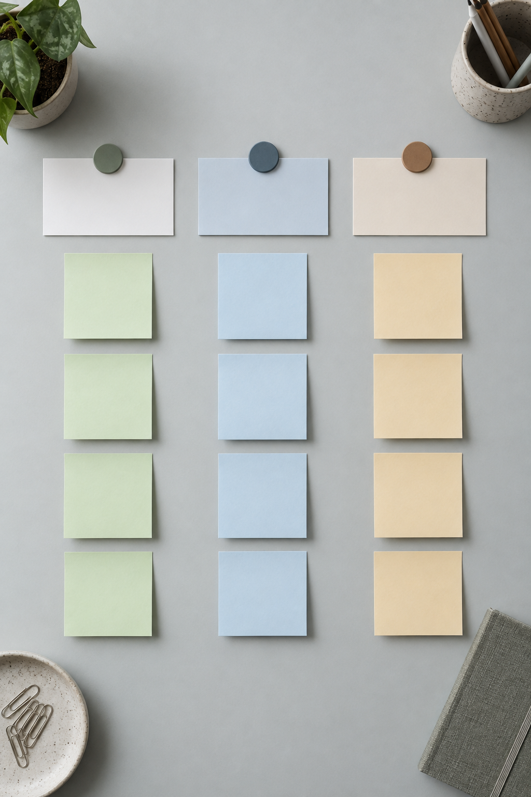
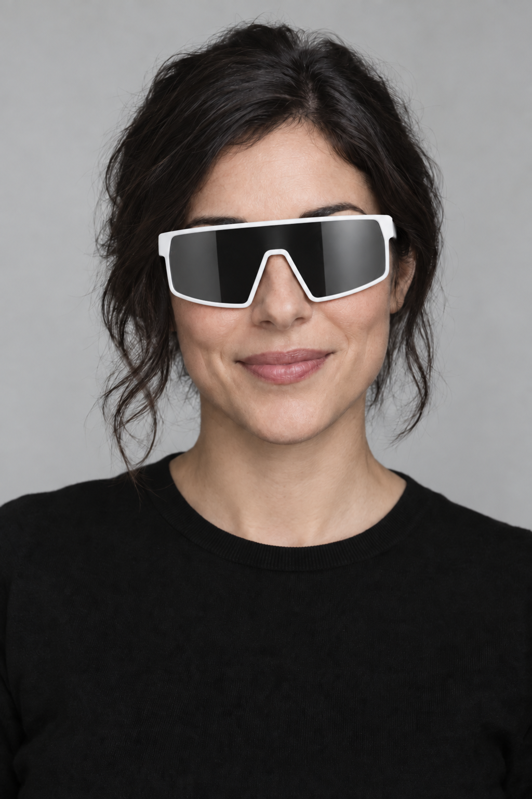
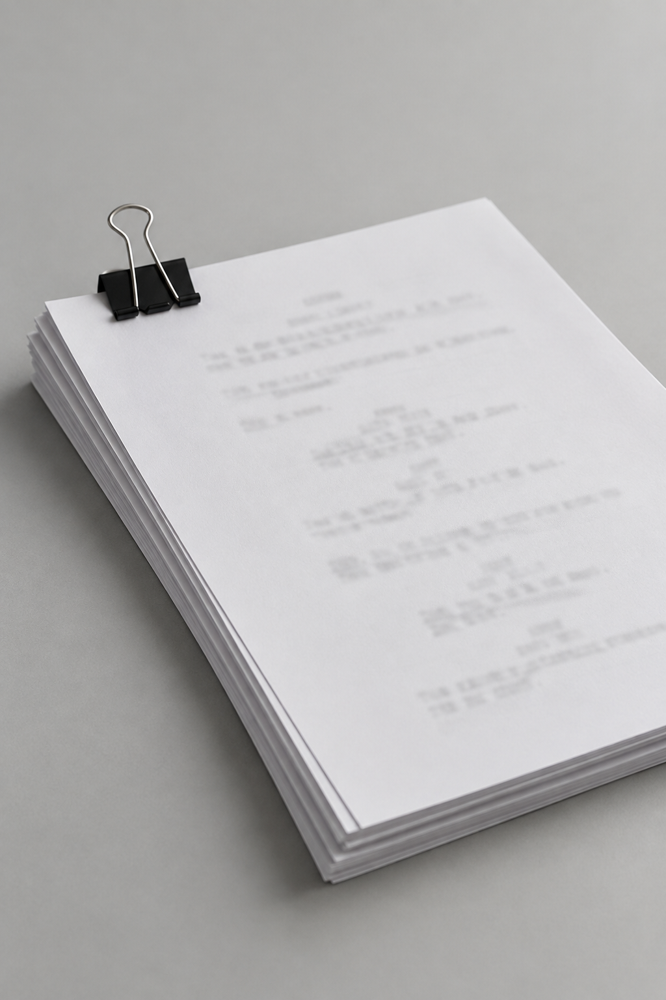
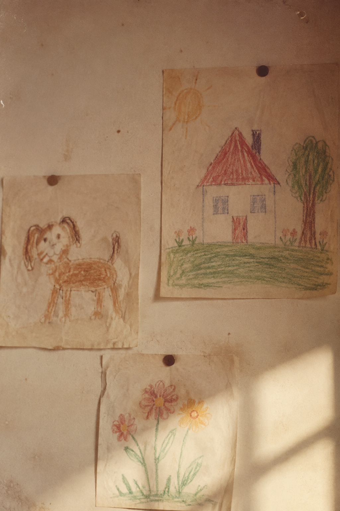
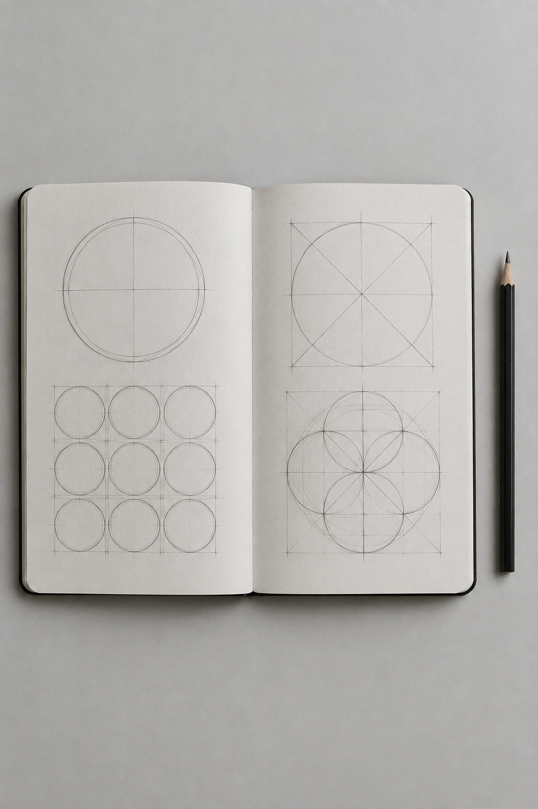
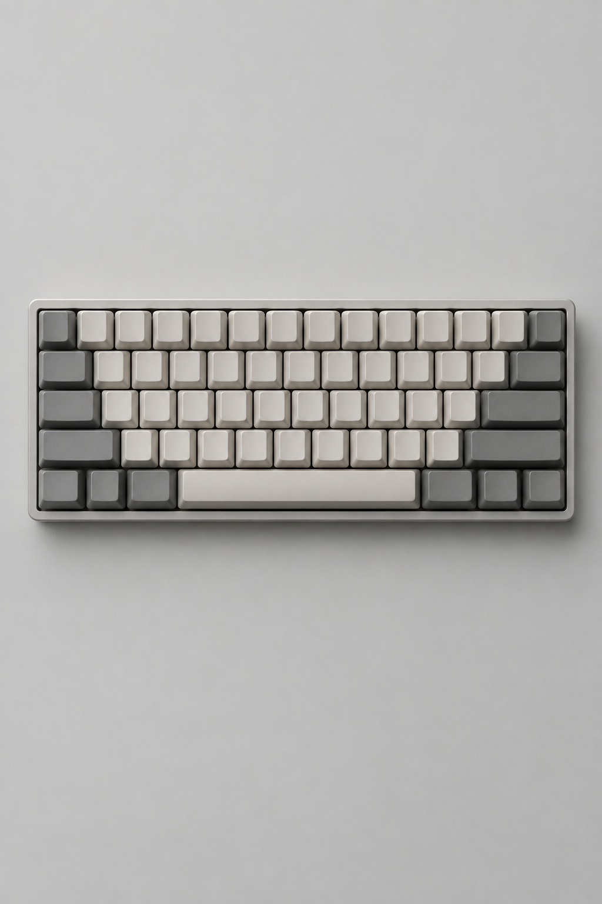

EN-US
HELLO
LV = 0,1
ES-ES
HOLA
LV = 0,2
KO-KR
안녕하세요
LV = 0,3
Lens EN · move to switch
A good story deserves to be understood everywhere — not just translated, but made to feel native to every reader
The role
Global 팀 Contents 파트의 Project Manager예요. 콘텐츠를 기획하고, 그 콘텐츠가 여러 언어와 문화권에서 자연스럽게 읽히도록 현지화 과정을 이끌어요.

Source Text
02 · ScriptGlossary
03 · TermsLocalization
04 · L10nReview
05 · LQALaunch
06 · GlobalOne idea
모든 콘텐츠는 하나의 언어, 하나의 아이디어에서 출발해요. 기획서와 초안, 수많은 리뷰를 거치며 조금씩 단단해지고, 그다음에 국경을 넘을 준비를 해요.



Every line passes through briefs, drafts and reviews before it is ready to travel across languages
LOCALIZE
단어를 바꾸는 게 아니라 맥락을 옮기는 일이에요. 유머, 존댓말, 날짜와 단위, 화면에 들어가는 글자 수까지. 읽는 사람이 번역이라는 걸 눈치채지 못하게 만드는 게 목표예요.
How I work
기획부터 출시까지, 콘텐츠가 모든 언어로 같은 날 같은 품질로 나가도록 세 단계를 챙겨요.
Plan
Content · Schedule · Scope∙ 무엇을, 언제, 어떤 언어로 낼지 정해요. 콘텐츠 기획안을 만들고, 언어별 일정과 분량을 계산해 팀이 같은 그림을 보게 해요.
Localize
Glossary · Style guide · Vendors∙∙ 용어집과 스타일 가이드를 관리하고, 번역사·현지 팀과 맥락을 공유해요. 질문이 오기 전에 답을 준비해 두는 게 제 몫이에요.
Deliver
LQA · Release · Feedback∙∙∙ 언어 품질 검수(LQA)로 화면 위 결과물을 확인하고, 동시 출시를 맞춰요. 출시 후 현지 반응을 모아 다음 기획에 반영해요.
1 : 1
ONE
SRC1 : N
STORY
L10NN : ∞
MANY VOICES
GLOBALContext first
원문이 어떤 장면에서, 누구에게, 어떤 톤으로 쓰였는지부터 정리해요. 맥락이 정확하면 번역은 훨씬 쉬워져요.
Content became easier
to share across borders
Source ↔ Target
Localization lets one story travel,
land, and feel at home anywhere
One seedMany fields